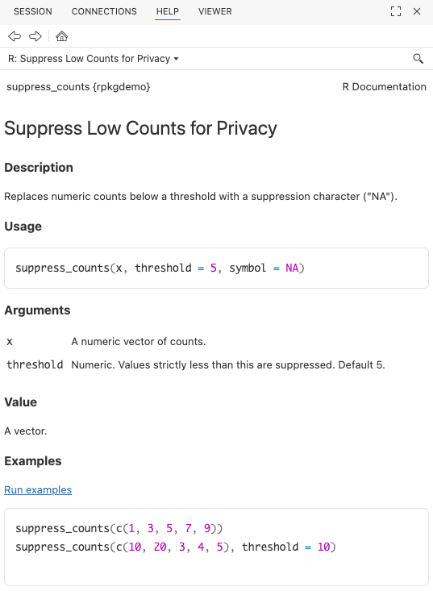

Setup TK
TK Positron
TK Air
TK RStudio keyboard bindings
TK git
To follow along the full tutorial you’ll need the following packages installed:
install.packages(c(
"devtools",
"usethis",
"roxygen2",
"testthat",
"knitr",
"rmarkdown",
"pkgdown",
"available",
"dplyr",
"janitor",
"readxl",
"stringr"
))TK
available::available("yourpackagename")TK
Start a new directory.
Create a package.
usethis::create_package(".")Run devtools::check(), or cmd+shift+E, or command
pallette cmd+shift+P “R: Check R Package”.
W checking DESCRIPTION meta-information ...
Non-standard license specification:
`use_mit_license()`, `use_gpl3_license()` or friends to pick a
license
usethis::use_mit_license()Edit the LICENSE file to add your name.
Check again.
── R CMD check results ── rpkgdemo 0.0.0.9000 ──
Duration: 6.2s
0 errors ✔ | 0 warnings ✔ | 0 notes ✔DESCRIPTION TK
Before:
Package: rpkgdemo
Title: What the Package Does (One Line, Title Case)
Version: 0.0.0.9000
Authors@R:
person("First", "Last", , "first.last@example.com", role = c("aut", "cre"))
Description: What the package does (one paragraph).
License: MIT + file LICENSE
Encoding: UTF-8
Roxygen: list(markdown = TRUE)
RoxygenNote: 7.3.3Package: rpkgdemo
Title: A demo package for building R packages
Version: 0.0.0.9000
Authors@R:
person("Stephen", "Turner", , "first.last@example.com", role = c("aut", "cre"),
comment = c(ORCID = "0000-0001-9140-9028"))
Description: A package to demonstrate building an R package to accompany a
workshop on building R packages in Positron. See the getting started
vignette for details.
License: MIT + file LICENSE
URL: https://github.com/stephenturner/rpkgdemo,
https://stephenturner.github.io/rpkgdemo/
BugReports: https://github.com/stephenturner/rpkgdemo/issuesFunctions, part 1
TK: process diagram: write function, document, build, test, check, commit, push
Our first function: no external dependencies
Let’s add a simple function that doesn’t use any external
dependencies. This function will suppress data counts below a specified
threshold by replacing them with NA. This might be required
in some public health setting to protect privacy when reporting small
counts.
All functions need to be in the R/ directory of the
package. These are regular .R files. You can organize your
functions in any way you like within this directory. I like to group
related functions together in the same file. Let’s create a file called
utils.R to hold our utility functions.
You could just create a new file manually, but I like to use the
usethis::use_r() function, because it pairs well with
usethis::use_test() that we’ll discuss later. For example,
to create a file named utils.R, you would run:
usethis::use_r("utils")Now let’s add our function to this file.
suppress_counts <- function(x, threshold = 5) {
# Check if input is numeric
if (!is.numeric(x)) {
stop("Input x must be numeric.")
}
# Suppress counts below the threshold
x[x < threshold] <- NA
# Return the modified vector
return(x)
}We can try this function out in the console:
suppress_counts(c(1, 3, 5, 7, 9))
#> [1] NA NA 5 7 9
suppress_counts(c(10, 20, 3, 4, 5), threshold = 10)
#> [1] 10 20 NA NA NA
suppress_counts(c("a", "b", "c"))
#> Error in suppress_counts(c("a", "b", "c")): Input x must be numeric.Now we need to document our function using special “roxygen comments”
so that we can get help on our function with
?suppress_counts. You can learn more about roxygen2 syntax
here.
The easiest way to do this is with the Positron Code Action to generate a roxygen skeleton. Place your cursor on the function name and invoke the Code Action by clicking the 💡.

This will result in something that looks like this:
#' Title
#'
#' @param x
#' @param threshold
#'
#' @returns
#'
#' @export
#' @examples
suppress_counts <- function(x, threshold = 5) {
# Check if input is numeric
if (!is.numeric(x)) {
stop("Input x must be numeric.")
}
# Suppress counts below the threshold
x[x < threshold] <- NA
# Return the modified vector
return(x)
}Before we can use the function, we need to generate the documentation
files. We can do this with the devtools::document()
function, which processes the roxygen comments and creates the necessary
files in the man/ directory. You can also use the keyboard
shortcut cmd+shift+D to run this command.
You’ll see some errors:
✖ utils.R:3: @param requires two parts: an argument name and a description.
✖ utils.R:6: @returns requires a value.
✖ utils.R:9: @examples requires a value.Let’s go ahead and fill out our full documentation.
#' Suppress Low Counts for Privacy
#'
#' Replaces numeric counts below a threshold with a suppression character ("NA").
#'
#' @param x A numeric vector of counts.
#' @param threshold Numeric. Values strictly less than this are suppressed. Default 5.
#'
#' @return A vector.
#' @export
#'
#' @examples
#' suppress_counts(c(1, 3, 5, 7, 9))
#' suppress_counts(c(10, 20, 3, 4, 5), threshold = 10)
#'
suppress_counts <- function(x, threshold = 5) {
# Check if input is numeric
if (!is.numeric(x)) {
stop("Input x must be numeric.")
}
# Suppress counts below the threshold
x[x < threshold] <- NA
# Return the modified vector
return(x)
}Document and build the package again. Now try
?suppress_counts to see the help file.

Go ahead and run a check (cmd+shift+E) to make sure everything is working so far.
── R CMD check results ── rpkgdemo 0.0.0.9000 ──
Duration: 8.7s
0 errors ✔ | 0 warnings ✔ | 0 notes ✔Adding additional arguments
Now let’s add an additional argument to our function to allow users to specify a custom suppression value. R is smart enough to automatically change the type to character if we provide a character suppression symbol.
#' Suppress Low Counts for Privacy
#'
#' Replaces numeric counts below a threshold with a suppression character (`NA`).
#'
#' @param x A numeric vector of counts.
#' @param threshold Numeric. Values strictly less than this are suppressed. Default 5.
#'
#' @return A vector.
#' @export
#'
#' @examples
#' suppress_counts(c(1, 3, 5, 7, 9))
#' suppress_counts(c(10, 20, 3, 4, 5), threshold = 10)
#' suppress_counts(1:10, threshold = 5, symbol = "*")
#'
suppress_counts <- function(x, threshold = 5, symbol = NA) {
# Check if input is numeric
if (!is.numeric(x)) {
stop("Input x must be numeric.")
}
# Suppress counts below the threshold
x[x < threshold] <- symbol
# Return the modified vector
return(x)
}If you rebuild the package the function will work:
suppress_counts(1:10, threshold = 5, symbol = "*")But now run a check (cmd+shift+E) and you’ll see a warning:
── R CMD check results ── rpkgdemo 0.0.0.9000 ──
Duration: 9.2s
❯ checking Rd \usage sections ... WARNING
Undocumented arguments in Rd file 'suppress_counts.Rd'
‘symbol’
Functions with \usage entries need to have the appropriate \alias
entries, and all their arguments documented.
The \usage entries must correspond to syntactically valid R code.
See chapter ‘Writing R documentation files’ in the ‘Writing R
Extensions’ manual.
0 errors ✔ | 1 warning ✖ | 0 notes ✔
Error: R CMD check found WARNINGs
Execution haltedSo go back and add documentation for the new symbol
argument.
#' Suppress Low Counts for Privacy
#'
#' Replaces numeric counts below a threshold with a suppression character (`NA`).
#'
#' @param x A numeric vector of counts.
#' @param threshold Numeric. Values strictly less than this are suppressed. Default 5.
#' @param symbol Character or `NA`. The symbol to use for suppression. Default is `NA`.
#'
#' @return A vector.
#' @export
#'
#' @examples
#' suppress_counts(c(1, 3, 5, 7, 9))
#' suppress_counts(c(10, 20, 3, 4, 5), threshold = 10)
#' suppress_counts(1:10, threshold = 5, symbol = "*")
#'
suppress_counts <- function(x, threshold = 5, symbol = NA) {
# Check if input is numeric
if (!is.numeric(x)) {
stop("Input x must be numeric.")
}
# Suppress counts below the threshold
x[x < threshold] <- symbol
# Return the modified vector
return(x)
}Everything should check out!
── R CMD check results ── rpkgdemo 0.0.0.9000 ──
Duration: 9.1s
0 errors ✔ | 0 warnings ✔ | 0 notes ✔Congratulations! You’ve created your first function, documented it, and built your package!
Before we go on, take a look at what additional files were created when you documented your package. You’ll never actually edit these by hand.
The NAMESPACE file:
# Generated by roxygen2: do not edit by hand
export(suppress_counts)The man/suppress_counts.Rd file:
% Generated by roxygen2: do not edit by hand
% Please edit documentation in R/utils.R
\name{suppress_counts}
\alias{suppress_counts}
\title{Suppress Low Counts for Privacy}
\usage{
suppress_counts(x, threshold = 5, symbol = NA)
}
\arguments{
\item{x}{A numeric vector of counts.}
\item{threshold}{Numeric. Values strictly less than this are suppressed. Default 5.}
\item{symbol}{Character or \code{NA}. The symbol to use for suppression. Default is \code{NA}.}
}
\value{
A vector.
}
\description{
Replaces numeric counts below a threshold with a suppression character (\code{NA}).
}
\examples{
suppress_counts(c(1, 3, 5, 7, 9))
suppress_counts(c(10, 20, 3, 4, 5), threshold = 10)
suppress_counts(1:10, threshold = 5, symbol = "*")
}Prior to Roxygen2, you would have had to create these files by hand!
Our second function: with external dependencies
Let’s add another function to map messy categorical inputs to standard codes (e.g., standardizing sex or gender entries). Here we’re going to mape various inputs like “M”, “female”, etc. to standard FHIR (Fast Health Interoperability Resources) HL7 specs for healthcare interoperability. We’ll be using HL7 v2.3 which allows for F (Female), M (Male), O (Other), U (Unknown).
Let’s go ahead and stick this into R/utils.R as
well.
Now, to use a function from another package we’ll need to call the
function using the :: operator to avoid adding a dependency
on the entire package. In this case, we’ll use the
dplyr::case_when() function from the dplyr
package to map various inputs to standardized codes.
#' Standardize Sex Variables
#'
#' Maps various inputs (M, Male, f, Female) to standard HL7/ISO codes (M, F, O, U).
#'
#' @param x A character vector of sex/gender inputs.
#'
#' @return A character vector containing "M", "F", "O", or "U".
#' @export
#'
#' @examples
#' standardize_sex(c("Male", "f", "Trans female", "nonbinary", "unknown", NA))
standardize_sex <- function(x) {
# Check if input is character
if (!is.character(x)) {
stop("Input x must be a character vector.")
}
# trim whitespace and make lowercase
x <- trimws(tolower(as.character(x)))
# Map various inputs to standard codes
standardized <- dplyr::case_when(
x %in% c("male", "m") ~ "M",
x %in% c("female", "f") ~ "F",
grepl("trans|non|binary", x) ~ "O",
.default = "U"
)
return(standardized)
}Document and build the package again and try the function out.
standardize_sex(c("Male", "f", "Trans female", "nonbinary", "unknown", NA))
#> [1] "M" "F" "O" "O" "U" "U"
standardize_sex(c(1, 2, 1, 2))
#> Error in standardize_sex(c(1, 2, 1, 2)): Input x must be a character vector.But now run a check (cmd+shift+E) and you’ll see an error:
── R CMD check results ── rpkgdemo 0.0.0.9000 ──
Duration: 9.2s
❯ checking dependencies in R code ... WARNING
'::' or ':::' import not declared from: ‘dplyr’
0 errors ✔ | 1 warning ✖ | 0 notes ✔
Error: R CMD check found WARNINGs
Execution haltedThis is because you’re using a function from the dplyr
package but haven’t declared that your package depends on it. To fix
this, you need to add dplyr to the Imports
field in your DESCRIPTION file. The easiest way to do this
is with the usethis::use_package() function:
usethis::use_package("dplyr")You’ll see at the console:
✔ Adding dplyr to Imports field in DESCRIPTION.
☐ Refer to functions with `dplyr::fun()`.And if you open up your DESCRIPTION file now, you’ll see
the imported dependency:
Imports:
dplyrNow run a check (cmd+shift+E) again and everything should be good!
── R CMD check results ── rpkgdemo 0.0.0.9000 ──
Duration: 15.9s
0 errors ✔ | 0 warnings ✔ | 0 notes ✔Take note that the package check took a few seconds longer, because R
had to load the dplyr package to check your code. This
brings up another point we won’t cover today about packages with heavy
dependencies. See the pkgndep
paper and pkgndep
package for details on analyzing dependency “heaviness.”
Package data
We’ll come back and add more functions to the package soon, but let’s take a quick detour to add some package data. There are a few different ways to include data in your package.
- Exported data. This is like the
irisdataset that comes with R, or thestarwarsdata that’s available after you load dplyr. This data is stored in thedata/directory of your package and is made available to users when they load your package. - Raw data. This is data that is stored in the
inst/extdata/(installed / external data) directory of your package and can be read in by your functions as needed. This is useful for demonstrating functions for reading in data files. - Internal data. This is data that is used internally by your package functions but is not exported to the user.
We’ll cover the first two in this tutorial.
Exported data
As noted above, exported data is stored in the data/
directory of your package. The data should be stored in
.rda format, and must be documented. But the data in
data/ is usually a clean version of raw data you’ve
gathered from elsewhere or created from code. And for the sake of
reproducibility, it’s best practice to include the code used to create
the data in the data-raw/ directory of your package.
The best way to do this is to call
usethis::use_data_raw() which will create the
data-raw/ directory and a template script for creating your
data, along with adding the data-raw directory to your
.Rbuildignore file so that it doesn’t get included when you
build your package.
usethis::use_data_raw()That should create a file at data-raw/DATASET.R. You can
name this file whatever you want. We’re going to create two datasets:
one that we download from the web and process/clean up a bit, and
another that we create completely from code.
External data from the web
Let’s create a dataset that links ZIP code to city and state. You can get this data from the postal service at https://postalpro.usps.com/ZIP_Locale_Detail.
In your data-raw/DATASET.R, write and run the following
code to download the excel file, read in tab #2, and do some cleanup
before writing it out.
# It's okay to load a package in this file - it's not part of the package itself
library(dplyr)
# Download the USPS ZIP code data
tf <- tempfile()
url <- "https://postalpro.usps.com/mnt/glusterfs/2025-12/ZIP_Locale_Detail.xls"
download.file(url = url, destfile = tf)
# Read in the data
zipcodes_raw <- readxl::read_excel(tf, sheet = "ZIP_DETAIL")
zipcodes_raw
# select relevant columns and clean up
zipcodes <-
zipcodes_raw |>
select(
zip = `DELIVERY ZIPCODE`,
city = `PHYSICAL CITY`,
state = `PHYSICAL STATE`
) |>
distinct(zip, .keep_all = TRUE) |>
mutate(city = stringr::str_to_title(city)) |>
arrange(zip, city)
zipcodes
# Save the dataset in the package
usethis::use_data(zipcodes, overwrite = TRUE)You’ll see a few notes:
> usethis::use_data(zipcodes, overwrite = TRUE)
✔ Adding R to Depends field in DESCRIPTION.
✔ Creating data/.
✔ Setting LazyData to "true" in DESCRIPTION.
✔ Saving "zipcodes" to "data/zipcodes.rda".
☐ Document your data (see <https://r-pkgs.org/data.html>).Note that last line – you need to document the data itself! If you don’t believe me, run a check.
── R CMD check results ── rpkgdemo 0.0.0.9000 ──
Duration: 12.1s
❯ checking for missing documentation entries ... WARNING
Undocumented code objects:
‘zipcodes’
Undocumented data sets:
‘zipcodes’
All user-level objects in a package should have documentation entries.
See chapter ‘Writing R documentation files’ in the ‘Writing R
Extensions’ manual.
0 errors ✔ | 1 warning ✖ | 0 notes ✔
Error: R CMD check found WARNINGs
Execution haltedLet’s go ahead and document the data. We generally document all our
package data in a R/data.R file.
usethis::use_r("data")The data documentation looks a lot like function documentation. The
only confusing things are (1) we never @export data, even
though it’s technically exported, and (2) we simply enter
"datasetname" after the roxygen block to actually export
the data. It should look like this:
#' ZIP code data
#'
#' ZIP code data from the US Postal Service.
#'
#' @format A data frame with three columns
#' 1. `zip`: The ZIP code.
#' 2. `city`: The U.S. city for that zip code.
#' 3. `state`: The U.S. state for that zip code.
#'
#' @source <https://postalpro.usps.com/ZIP_Locale_Detail>
#'
#' @examples
#' zipcodes
#'
"zipcodes"Document (cmd+shift+d), rebuild (cmd+shift+b), check (cmd+shift+e)
again and everything should be good! Try running ?zipcodes
to see the help file for the dataset.
Creating data from code
In that same data-raw/DATASET.R file, let’s create a
synthetic dataset that we can use to demonstrate our functions.
# Create some sex variables to sample from
sexes <- c(
"male",
"female",
"Male",
"Female",
"M",
"F",
"m",
"f",
"transgender",
"trans male",
"Trans Female",
"non-binary",
"Unknown",
"unk",
"???"
)
sexes
# Get only virginia zip codes
vazips <-
zipcodes |>
dplyr::filter(state == "VA") |>
dplyr::pull(zip)
vazips
# Create a 1000 row dataset. Make sure to set a random seed!
n <- 1000
set.seed(20251205)
rped <-
tibble::tibble(
sex = sample(sexes, size = n, replace = TRUE),
age = sample(20L:60L, size = n, replace = TRUE),
zip = sample(vazips, size = n, replace = TRUE),
lab1 = rpois(n, lambda = 2),
lab2 = rpois(n, lambda = 10)
) |>
arrange(zip) |>
mutate(id = row_number(), .before = 1)
# Add some noise
rped$zip[1] <- "12345"
rped$age[2] <- 12
rped$age[3] <- 120
rped
# Save the dataset in the package
usethis::use_data(rped, overwrite = TRUE)Go ahead and open up R/data.R again and add
documentation for this dataset as well. Don’t close this file, we’ll
come back to it momentarily.
#' RPED: R Package Example Data
#'
#' Simulated data for demonstrating the functionality of the rpkgdemo package.
#'
#' @format A data frame with 6 columns:
#' 1. `id`: A unique identifier for each individual.
#' 2. `sex`: The sex of the individual.
#' 3. `age`: The age of the individual.
#' 4. `zip`: The ZIP code of the individual's residence.
#' 5. `lab1`: A simulated lab value from a Poisson distribution with lambda=2.
#' 6. `lab2`: A simulated lab value from a Poisson distribution with lambda=10.
#'
#' @examples
#' rped
#'
"rped"And run a document, build, check once more.
Raw data
In a few minutes we’re going to write a function to read in data like
this from a CSV file that sets a few options not in the
readr::read_csv() defaults. Above we created some example
data we can work with by just running rped, but to write
examples (and later tests) with a function to read in files, we actually
need data stored in a file that we can access from our function.
Go back into your data-raw/DATASET.R file and add this
to the very end of the data generation script you have.
If you’ve never used here::here() before, it’s a great
way to create file paths relative to the root of your project,
regardless of your working directory. It looks for a .git
directory or a DESCRIPTION file. Try it.
# Write as installed data
extdatadir <- here::here("inst/extdata")
extdatadir
dir.create(extdatadir, recursive = TRUE)
readr::write_csv(rped, here::here("inst/extdata/rped.csv"))Rebuild the package, and try running this code below. This will retrieve the absolute path to this installed raw data on your system. It’ll look different than what you see below for me.
system.file("extdata/rped.csv", package = "rpkgdemo")
#> [1] "/home/runner/work/_temp/Library/rpkgdemo/extdata/rped.csv"Functions, part 2
Now that we have some built-in package data (exported and raw files), let’s add a few more functions.
Read in raw data
First, let’s write a function to read data like we created above from
a file. Sure, you could just use readr::read_csv(). But
imagine you’ve got some data from zip codes 02108 (Boston, MA) or 00901
(San Juan, PR)? These zip codes have leading zeros that get stripped
when read in as numeric. So let’s create a function that always reads in
zip codes as character, sex as character, and age as integer. If you try
to read in some other data with this function, it’ll throw warnings
and/or errors.
Back in R/utils.R, add this function, fully documented,
with examples. Note you have to prefix all the readr functions
with readr::.
#' Read laboratory data
#'
#' Read laboratory data from a file
#'
#' @param file A file path
#'
#' @returns A data frame
#' @export
#'
#' @examples
#' fp <- system.file("extdata/rped.csv", package = "rpkgdemo", mustWork = TRUE)
#' read_labdata(fp)
#'
read_labdata <- function(file) {
readr::read_csv(
file,
col_types = readr::cols(
sex = readr::col_character(),
age = readr::col_integer(),
zip = readr::col_character(),
.default = readr::col_guess()
)
)
}Note here that the example uses system.file() to get the
path to the installed raw data file we created earlier. Document, build,
check.
Oops – we have a warning. We forgot to import the readr
package!
── R CMD check results ── rpkgdemo 0.0.0.9000 ──
Duration: 13.7s
❯ checking dependencies in R code ... WARNING
'::' or ':::' import not declared from: ‘readr’
0 errors ✔ | 1 warning ✖ | 0 notes ✔
Error: R CMD check found WARNINGs
Execution haltedAdd it to the Imports in DESCRIPTION with
usethis:
usethis::use_package("readr")Check once again and it should be clean.
Using dplyr data masking in packages
Let’s add another function that uses piped dplyr code with data
masking. Here’s the full function with roxygen documentation. This
standardizes the sex variable using our earlier function,
joins with the zipcodes data, and centers and scales lab
values.
#' Prepare lab data
#'
#' Prepare lab data for analysis. Standardizes the `sex` variable, joins with `zipcodes` data, centers and scales lab values.
#'
#' @param x A data frame containing lab data with at least `sex`, `zip`, and lab value columns starting with "lab".
#'
#' @returns A data frame with standardized `sex`, joined `zipcodes`, and scaled lab values.
#' @export
#'
#' @examples
#' prep_lab_data(rped)
#'
prep_lab_data <- function(x) {
x |>
dplyr::mutate(sex = standardize_sex(sex)) |>
dplyr::left_join(zipcodes, by = "zip") |>
dplyr::mutate(dplyr::across(dplyr::starts_with("lab"), \(x) scale(x)[, 1]))
}Write this function, document, and build the package, and the
function will work. But what happens when we check the package? We get
some weird NOTEs.
── R CMD check results ── rpkgdemo 0.0.0.9000 ──
Duration: 12.7s
❯ checking R code for possible problems ... NOTE
prep_lab_data: no visible binding for global variable ‘sex’
prep_lab_data: no visible binding for global variable ‘zipcodes’
Undefined global functions or variables:
sex zipcodes
0 errors ✔ | 0 warnings ✔ | 1 note ✖This is because of how dplyr does data masking with the pipe operator
(|>). R CMD check can’t see where sex or
zipcodes are coming from, so it throws a NOTE. You can see
lots of solutions to this problem by Googling or asking Chat how to fix
the “no visible binding for global variable” problem. Some of them
involve declaring global variables. But the best practice is described
in the Using dplyr
in packages vignette. The best way to do this is with the “.data
pronoun” from rlang. We’ll have to put .data$ in front
of sex. We’ll also need to explicitly reference the
zipcodes data from the package we’re building with
rpkgdemo::zipcodes.
You can do this now, but you’ll get another note saying that you have
an undefined global function/variable called .data. The way
to fix this is to import .data from rlang with
usethis. You only have to do this once. You’ll get a note about
package-level documentation. Go ahead and accept. Document, rebuild,
check.
usethis::use_import_from("rlang", ".data")Finally, let’s add some sanity checking to our function to throw some warnings if we have ZIP codes that aren’t real, ages that are out of range, or minors in the dataset. Notice that I’m adding an option for whether these warnings are issued or not. We’ll examine this when we get to testing below. Here’s the final function:
#' Prepare lab data
#'
#' Prepare lab data for analysis. Standardizes the `sex` variable, joins with `zipcodes` data, centers and scales lab values.
#'
#' @param x A data frame containing lab data with at least `sex`, `zip`, and lab value columns starting with "lab".
#' @param warnings Logical. Whether to issue warnings for potential data issues (bad zip codes, minors, unrealistic ages). Default is `TRUE`.
#'
#' @returns A data frame with standardized `sex`, joined `zipcodes`, and scaled lab values.
#' @export
#'
#' @examples
#' prep_lab_data(rped)
#'
prep_lab_data <- function(x, warnings = TRUE) {
# Check for potential issues
if (warnings) {
# Check for bad zip codes
badzips <- !(x$zip %in% rpkgdemo::zipcodes$zip)
if (any(badzips)) {
warning(paste0("Found ", sum(badzips), " bad zip code(s)."))
}
# Check for minors
minors <- x$age < 18
if (any(minors)) {
warning(paste0("Found ", sum(minors), " minor(s) in dataset."))
}
# Check for unrealistic numbers
unrealistic <- x$age < 0 | x$age > 120
if (any(unrealistic)) {
warning(paste0(
"Found ",
sum(unrealistic),
" unrealistic age(s) in dataset."
))
}
}
# Prepare the data
result <-
x |>
dplyr::mutate(sex = standardize_sex(.data$sex)) |>
dplyr::left_join(rpkgdemo::zipcodes, by = "zip") |>
dplyr::mutate(dplyr::across(dplyr::starts_with("lab"), \(x) scale(x)[, 1]))
return(result)
}Tests
Testing is an essential part of building a robust R package. It helps
ensure that your functions work as expected and can catch bugs early in
the development process. We’ll use the testthat package,
which is the most popular testing framework in the R community.
You can read more about testing in Testing chapter of the R Packages book and in the testthat documentation.
Setting up testthat
As always, we’ll use usethis to set up our testing
infrastructure. Just as we used usethis::use_r("utils") to
create R/utils.R, we’ll use a similar pattern here to
create the initial testthat infrastructure, and a test file for our
utils.R functions.
usethis::use_test("utils")✔ Adding testthat to Suggests field in DESCRIPTION.
✔ Adding "3" to Config/testthat/edition.
✔ Creating tests/testthat/.
✔ Writing tests/testthat.R.
✔ Writing tests/testthat/test-utils.R.
☐ Modify tests/testthat/test-utils.R.Go ahead and play around with the boilerplate multiplication test
already set up. Then you can run the package tests with
devtools::test() or with the keyboard shortcut
cmd+shift+T.
Our first real tests
At this point you want to open up utils.R and test-utils.R side by side and start writing tests that will cover every component of the code.
Let’s go through in detail what I’m doing here. Notice that I’m first
creating a result object res that holds the result of
running the function. I’m wrapping that whole assignment in an
expect_silent(), which would fail if the function throws a
warning. Then I’m using expect_*() functions to check that
the result is what I expect. Finally, I’m also testing that the function
throws an error when given incorrect input, which it should. If the
function doesn’t throw an error when it should, the test will fail.
test_that("suppress_counts", {
# Correct usage
expect_silent(res <- suppress_counts(c(1, 3, 5, 7, 9)))
expect_equal(res, c(NA, NA, 5, 7, 9))
expect_silent(res <- suppress_counts(c(10, 20, 3, 4, 5), threshold = 10))
expect_true(all(is.na(res[3:5])))
expect_silent(res <- suppress_counts(1:10, threshold = 5, symbol = "*"))
expect_true(all(res[1:4] == "*"))
# Incorrect usage
expect_error(suppress_counts("not numeric"))
})Coverage with covr
Testing all possible use cases of your functions can be tedious. The
covr package can help you identify which lines of code are
covered by your tests and which are not.
You can get a high-level summary of test coverage with:
covr::package_coverage()> covr::package_coverage()
rpkgdemo Coverage: 9.30%
R/utils.R: 9.30%This is telling us we have terrible coverage. Let’s keep adding tests to that file:
test_that("standardize_sex", {
result <- standardize_sex(c("Male", "male", "M", "m"))
expect_equal(result, c("M", "M", "M", "M"))
result <- standardize_sex(c("Female", "female", "F", "f"))
expect_equal(result, c("F", "F", "F", "F"))
result <- standardize_sex(c(
"Trans female",
"transgender",
"nonbinary",
"non-binary"
))
expect_equal(result, c("O", "O", "O", "O"))
result <- standardize_sex(c("unknown", "xyz", ""))
expect_equal(result, c("U", "U", "U"))
result <- standardize_sex(c(" Male ", " female "))
expect_equal(result, c("M", "F"))
})This time, instead of running covr::package_coverage(),
let’s use the covr::report() function which will generate
an HTML report that you can view in your web browser. This report will
show you which lines of code are covered by your tests and which are
not.
covr::report()
If you click on the particular source code file, you can see where
you have coverage and where you don’t. It’s clear from our coverage
report that we didn’t test the error handling in the
standardize_sex() function, and we didn’t test the
remaining functions at all.

We can continue writing tests until we have 100% coverage, but in real life that’s not always feasible. Aim for high coverage, but focus on testing the most important parts of your code. Pro-tip: nearly any Frontier AI model can automate all the tedious parts of writing tests for you. I’ve had good success with Positron Assistant.
covr::package_coverage()rpkgdemo Coverage: 100.00%
R/utils.R: 100.00%
devtools::test()ℹ Testing rpkgdemo
✔ | F W S OK | Context
✔ | 25 | utils
══ Results ═════════════════==========
[ FAIL 0 | WARN 0 | SKIP 0 | PASS 25 ]Make sure to document, build, and check one last time to ensure
everything is working. Notice now when you run a
devtools::check() it automatically runs all the tests in
the package!
README.Rmd
The README file is the first thing people see when they visit your
package repository on GitHub. It’s a great place to provide an overview
of your package, how to install it, and some basic usage examples. You
can create a README file using R Markdown, which allows you to include
formatted text, code chunks, and output. You’ll name the file
README.Rmd, then you can use
devtools::build_readme() to render it to
README.md, which is what GitHub displays. To create a
README.Rmd file, you can use the usethis::use_readme_rmd()
function.
usethis::use_readme_rmd()Then use devtools::build_readme() to render it. Besides
just running knitr to render the file, it installs a temporary copy of
the package then renders the README.Rmd in a clean session.
devtools::build_readme()GitHub Actions
GitHub Actions (GHA) allow you to automate workflows for your
package, such as running tests and package checks, or building
documentation. The usethis package provides functions to
set up common GHA workflows for R packages. This will create the
necessary YAML files in the .github/workflows/ directory of
your package to run a package check whenever (1) you push or merge to
the main branch, or (2) you open up a pull request to the main branch
from any development branch.
usethis::use_github_action("check-release")✔ Setting active project to "/Users/sdt5z/repos/rpkgdemo".
✔ Creating .github/.
✔ Adding "^\\.github$" to .Rbuildignore.
✔ Adding "*.html" to .github/.gitignore.
✔ Creating .github/workflows/.
✔ Saving "r-lib/actions/examples/check-release.yaml@v2" to .github/workflows/R-CMD-check.yaml.
☐ Learn more at <https://github.com/r-lib/actions/blob/v2/examples/README.md>.
✔ Adding "R-CMD-check badge" to README.Rmd.
☐ Re-knit README.Rmd with devtools::build_readme().
> devtools::build_readme()
ℹ Installing rpkgdemo in temporary library
ℹ Building /Users/sdt5z/repos/rpkgdemo/README.Rmd
Taking this a step furtner, you can go into the settings for your GitHub repository, click into the Rules section, and create a new branch protection rule to require (1) pull requests to main, blocking direct pushes to main, and (2) that the R CMD check action passes before allowing a pull request to be merged into main.
If we were to do something that causes the check to fail, we can’t merge into main!

We can go into the details to see what happened:

Once we fix the issue we can merge to main:

pkgdown
The pkgdown package makes it easy to create a website
for your R package. The website can include function reference,
vignettes, articles, and more. You can set up pkgdown for
your package using the usethis::use_pkgdown() function.
usethis::use_pkgdown()Before you render your site, make sure your README is up to date.
devtools::build_readme()Now, you can build the site with pkgdown::build_site().
This builds a complete website by rendering the home page from the
README, function reference from the docs, articles from your vignettes,
NEWS files, LLM docs, and more.
pkgdown::build_site()See the pkgdown website for this package:
- Homepage: https://stephenturner.github.io/rpkgdemo/
- Vignette (full tutorial): https://stephenturner.github.io/rpkgdemo/articles/rpkgdemo.html
- Function reference: https://stephenturner.github.io/rpkgdemo/reference/index.html
The pkgdown package also creates an LLMs.txt at the root of your site that contains the contents of your README.md, your reference index, and your articles index. It also creates a .md file for every existing .html file in your site. Together, this gives an LLM an overview of your package and the ability to find out more by following links. For example:
- https://stephenturner.github.io/rpkgdemo/llms.txt
- https://stephenturner.github.io/rpkgdemo/articles/rpkgdemo.md
- https://stephenturner.github.io/rpkgdemo/reference/index.md
- https://stephenturner.github.io/rpkgdemo/reference/prep_lab_data.md
Finally, you can automate the deployment of your pkgdown website with yet another GitHub Action: And the vignette here:
usethis::use_pkgdown_github_pages()✔ Writing _pkgdown.yml.
☐ Modify _pkgdown.yml.
✔ Initializing empty, orphan branch "gh-pages" in GitHub repo "stephenturner/rpkgdemo".
✔ GitHub Pages is publishing from:
• URL: "https://stephenturner.github.io/rpkgdemo/"
• Branch: "gh-pages"
• Path: "/"
✔ Saving "r-lib/actions/examples/pkgdown.yaml@v2" to .github/workflows/pkgdown.yaml.
☐ Learn more at <https://github.com/r-lib/actions/blob/v2/examples/README.md>.
✔ Recording <https://stephenturner.github.io/rpkgdemo/> as site's url in _pkgdown.yml.
☐ Run devtools::document() to update package-level documentation.
✔ Setting <https://stephenturner.github.io/rpkgdemo/> as homepage of GitHub repo "stephenturner/rpkgdemo".Now whenever you push new changes to main, the pkgdown site will be rebuilt and redeployed automatically.